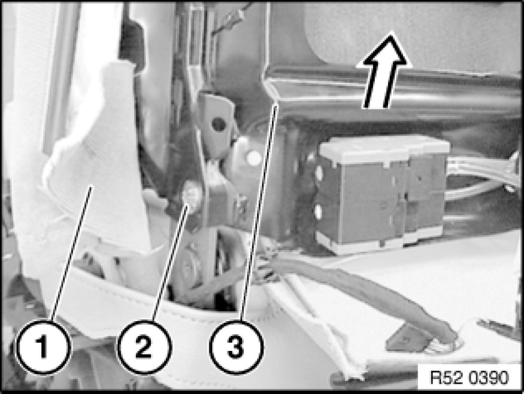
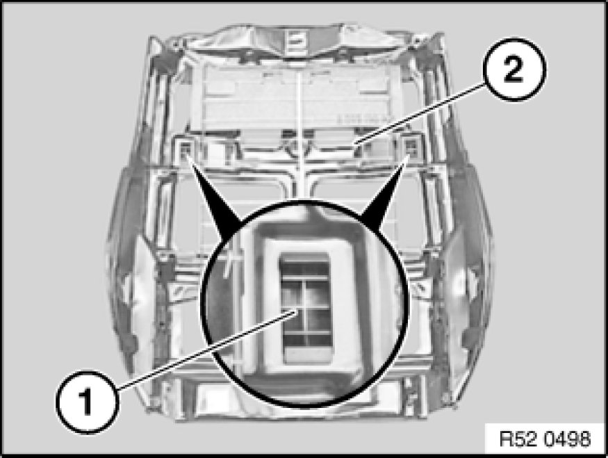
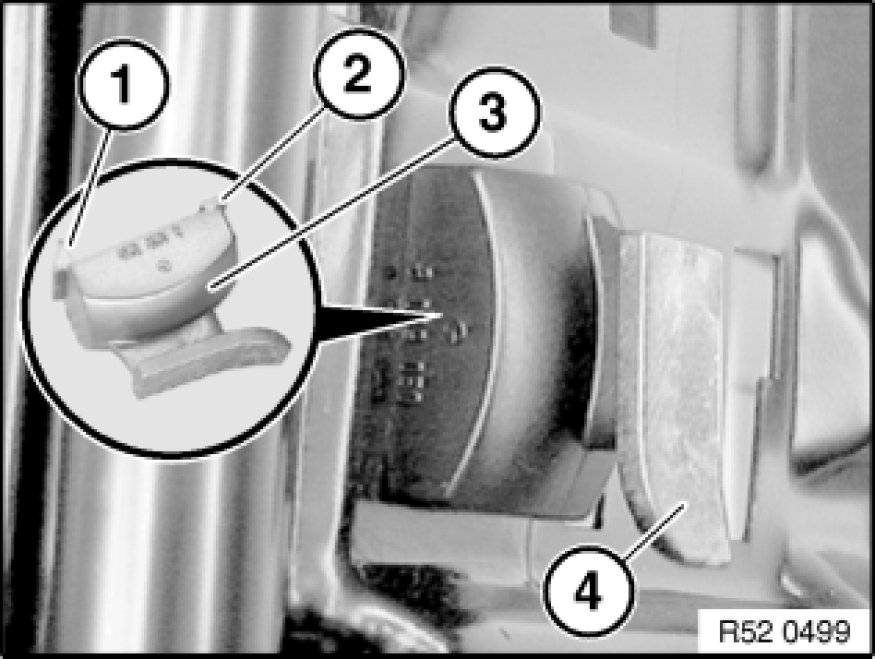

Removing and Installing/Replacing Backrest Frame on Front Left or Right Seat (Normal/Electric)
52 14 030 - Removing and installing/replacing backrest frame on front left or right seat (normal/electric)

Necessary preliminary tasks:
- Remove rear panel on front seat
Replacement only:
- Remove backrest cover Replacing Backrest Cover on Front Left or Right Seat (Sports/Electric)
- Remove lumbar cushion Replacing Lumbar Cushion on Front Left or Right Seat (Normal/Electric)
- Remove valve housing for lumbar support
- Remove drive unit Service and Repair for lumbar support
- Remove release mechanism on front seat

Removing backrest frame only:
Unhook backrest cover (1) on left and right.
Important!
Do not under any circumstances turn screw underneath screw (2), this would destroy the seat frame.
Release screws (2) on left and right.
Installation:
Replace screws (microencapsulated).
Tightening torque 52 10 2AZ [1][2]Seats.
Remove backrest frame (3) with backrest cover towards top.

Replacing backrest frame only:
Detach mount (1) for rear panel towards top/rear from backrest frame (2).

Installation:
Catch (1) and guide (2) on mount (3) for rear panel must not be damaged.
Guide taper (4) must point downwards.

If necessary, remove mat (1) from spring wire (2) of backrest frame (3).

Installation Note:
If necessary, suspend mat (1) on uppermost spring wire (2) on backrest frame (3).